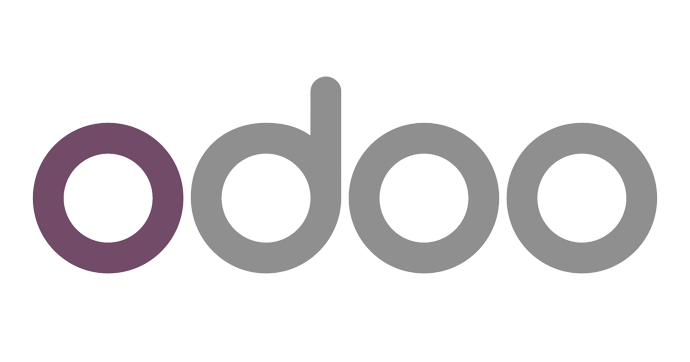
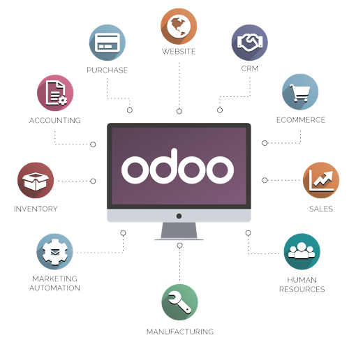

KOBAZ

Ezaugarriak
- Odook modulu funtzional ugari biltzen ditu, hala nola kontabilitatea, salmentak, erosketak, inbentarioa, giza baliabideak, marketina, proiektuen kudeaketa, fabrikazioa eta gehiago.
- Nabigazioa eta aplikazioen erabilera errazten duen erabiltzaile-interfaze lagunkoia eskaintzen du.
- Oso pertsonalizatua da, hainbat enpresaren behar espezifikoetara egokitzeko. Erabiltzaileek formularioak, txostenak eta lan-fluxuak pertsonaliza ditzakete, beren baldintzen arabera.
- Kode irekikoa denez, Odook garatzaileei sistema aldatzeko eta pertsonalizatzeko aukera ematen die, enpresa baten premia partikularren arabera.

Abantailak
- Odoo soluzio modularra da, eta horrek esan nahi du erraz egokitu daitekeela enpresa bakoitzaren behar espezifikoetara. Moduluak, beharrezkoa den heinean, gehitu edo ezabatu daitezke, sistemaren oinarria aldatu beharrik gabe.
- Odook plataforma bakar batean integratzen ditu enpresa-prozesu guztiak, eta horrek sailen arteko lankidetza eta erabaki informatuak hartzea errazten du.
- Odook enpresa-prozesu asko automatizatzen ditu, eta horrek denbora eta ahalegina aurrezten dizkie langileei.
- Odoo kode irekiko soluzio bat da, eta horrek esan nahi du ERP soluzio tradizionalak baino eskuragarriagoa dela.
Kobaz
Julen Merino eta Jon Gonzalez
© 2023 kobaz enpresa, Julen eta Jon-engatik egina